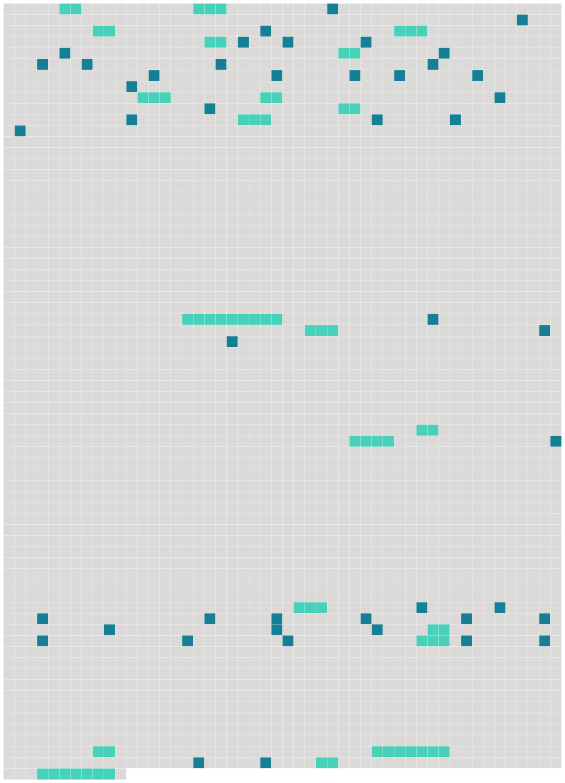

Longueur nb maillons : 67 mentions |
|
La tentative de suicide d' [un locataire] habitant au rez-de-chaussée est à l'origine du sinistre. [Le jeune homme] a été blessé au visage et aux bras. [Il] a été admis aux urgences. [2 phrases]
Si l'expert retient le principe d'une altération du discernement de nature à diminuer la responsabilité pénale de [Franck] , le praticien souligne aussi quelques traits alarmants dans la personnalité [du prévenu]
Ainsi, le médecin évoque-t -il une « pyromanie pathologique » à [son] sujet et rappelle de quelle manière, en octobre 2001, [le jeune homme] , mu par un coup de colère, s'est mis à brûler une chaise au domicile familial. Me Schneider, en défense, insiste sur la souffrance de [son client] , [ses] idées noires, [sa] détresse.
Pour l'avocate, [il] a d'abord et de manière urgente besoin d'une prise en charge médicale.
Ce jour là, le tribunal condamne [Franck] à deux mois de prison avec sursis et mise à l'épreuve consistant en une obligation de soins. Devant le tribunal correctionnel, [le prévenu] s'était voulu rassurant. Expliquant qu' [il] avait agi « sous l'effet de l'alcool » à Menoncourt, [il] affirmait : « [Je] n'ai plus d'intention criminelle comme à l'époque.
[Je] ne ressens plus cette fascination pour le feu ». [1 phrases] [J'] éprouvais une sorte de fascination pour le feu. [1 phrases] Nous étions allés sur la tombe de [mon] frère, qui s'était suicidé un peu avant. [Mon] frère avait été incinéré. Cela [m'] a choqué et [m'] a fait faire des cauchemars.
[Je] voyais des flammes ». [1 phrases]
[Franck] , 30 ans, comparaît alors pour avoir tenté de faire exploser, le 1er novembre 2001, la station-service « Total » installée aux Errues, en bordure de la RN 83, sur le territoire de la commune de Menoncourt.
Le soir de la Toussaint 2001, [le jeune homme] a apporté une bouteille de gaz, l' [a ouverte] puis posée sur un morceau de bois coincé dans le ratelier des bouteilles de butane de la station. [Il] a ensuite arrosé le tout d'hydrocarbure avant de faire couler au sol une traînée d'essence destinée à servir de mèche. [Il] a pris la fuite en voiture après l'avoir allumée puis [est revenu] sur les lieux une fois compris que l'explosion attendue n'aurait pas lieu.
C'est alors qu'une patrouille de gendarmerie, alertée par un témoin, [l'] arrête. Titulaire d'une maîtrise en sciences, [le jeune homme] est en arrêt maladie depuis de longs mois lorsqu' [il] se présente devant le tribunal.
[Il] est suivi par un médecin généraliste et un psychiatre et [prend] régulièrement des psychotropes. [44 phrases]
» [1 phrases]
Atteint de troubles psychiques, [le jeune homme] , âgé de trente ans, est gravement perturbé depuis le suicide, par le gaz, de [son] frère en 2001.
Jugé voici six semaines ( lire ci-dessus ) pour une tentative de destruction d'une station-service, [il] avait sans cesse fait référence au traumatisme provoqué par le décès de ce frère. [22 phrases]
» [4 phrases] On voyait chez [notre voisin du dessous] C'est ensuite que nous avons compris que l'explosion venait de chez [lui] [47 phrases]
Elle s'est confirmée lorsque les fonctionnaires ont retrouvé [le jeune homme] à l'hôpital.
Souffrant de brûlures, [il] a été admis aux urgences où [il] devrait rester en observation pendant plusieurs jours.
[Il] a expliqué aux policiers que, pendant la nuit de lundi à mardi, [il] a voulu mettre fin à [ses] jours en ouvrant le gaz qui alimente [ses] plaques de cuisson, dans la cuisine.
[Il] a ensuite pris un médicament et [bu] du whisky avant de s'endormir dans le salon.
[Il] s'est réveillé au bout d'un temps indéterminé, la bouche pâteuse. [Il] aurait alors voulu boire de l'eau : [il] s'est levé et [a allumé] la lumière... [1 phrases]
[Il] n'a pas été brûlé plus grièvement car, au moment où [il] a mis sous tension l'ampoule électrique, [il] se trouvait dans le salon et non dans la cuisine.
[Le jeune homme] occupait [son] logement depuis deux mois environ et [était] dépressif. [22 phrases]
[ article ]
[L'occupant de l'appartement du rez-de-chaussée] , à l'origine du sinistre, a été brûlé au visage et aux bras.
Quittant les lieux en courant, juste après l'explosion, [il] a gagné l'hôpital par [ses] propres moyens et y [a été] admis.
L'enquête de police a rapidement établi que le sinistre était la conséquence d'une tentative de suicide au gaz de [ce jeune homme âgé de 30 ans] |
 |
Il est possible de télécharger la ressource sur la page Ortolang |
Si vous avez des questions ou vous voyez des erreurs, merci d'envoyer un mail à silvia.federzoni89@gmail.com |